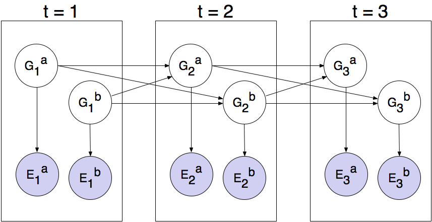

ECE4524: Artificial Intelligence and Engineering Applications, Spring 2022
Project 4: Ghostbusters
 |
Introduction
Pacman spends his life running from ghosts, but things were not always so. Legend has it that many years ago, Pacman's great grandfather Grandpac learned to hunt ghosts for sport. However, he was blinded by his power and could only track ghosts by their banging and clanging.
In this project, you will design Pacman agents that use sensors to locate and eat invisible ghosts. You'll advance from locating single, stationary ghosts to hunting packs of multiple moving ghosts with ruthless efficiency.
The code for this project contains the following files, available as a zip archive.
Files you'll edit:
busterAgents.py: Agents for playing the Ghostbusters variant of Pacman.
inference.py: Code for tracking ghosts over time using their sounds.
Files you will NOT edit:
busters.py: The main entry to Ghostbusters (replacing Pacman.py)
busterGhostAgents.py: New ghost agents for Ghostbusters
distanceCalculator.py: Computes maze distances
game.py: Inner workings and helper classes for Pacman
ghostAgents.py: Agents to control ghosts
graphicsDisplay.py: Graphics for Pacman
graphicsUtils.py: Support for Pacman graphics
keyboardAgents.py: Keyboard interfaces to control Pacman
layout.py: Code for reading layout files and storing their contents
util.py: Utility functions
Files to Edit and Submit: You will fill in portions of bustersAgents.py and inference.py during the assignment. You should submit these files with your code and comments. Please do not change the other files in this distribution.
Evaluation: Your code will be autograded for technical correctness. Please do not change the names of any provided functions or classes within the code, or you will wreak havoc on the autograder. However, the correctness of your implementation – not the autograder's judgements – will be the final judge of your score. If necessary, we will review and grade assignments individually to ensure that you receive due credit for your work.
Academic Dishonesty: We will be checking your code against other submissions in the class for logical redundancy. If you copy someone else's code and submit it with minor changes, we will know. These cheat detectors are quite hard to fool, so please don't try. We trust you all to submit your own work only; please don't let us down. If you do, we will pursue the strongest consequences available to us.
Getting Help: You are not alone! If you find yourself stuck on something, contact the course staff for help. Office hours, section, and the discussion forum are there for your support; please use them. If you can't make our office hours, let us know and we will schedule more. We want these projects to be rewarding and instructional, not frustrating and demoralizing. But, we don't know when or how to help unless you ask.
Discussion: Please be careful not to post spoilers.
Ghostbusters and BNs
In this version of Ghostbusters, the goal is to hunt down scared but invisible ghosts. Pacman, ever resourceful, is equipped with sonar (ears) that provides noisy readings of the Manhattan distance to each ghost. The game ends when Pacman has eaten all the ghosts. To start, try playing a game yourself using the keyboard.
python busters.py
The blocks of color indicate where the each ghost could possibly be, given the noisy distance readings provided to Pacman. The noisy distances at the bottom of the display are always non-negative, and always within 7 of the true distance. The probability of a distance reading decreases exponentially with its difference from the true distance.
Your primary task in this project is to implement inference to track the ghosts. For the keyboard based game above, a crude form of inference was implemented for you by default: all squares in which a ghost could possibly be are shaded by the color of the ghost. Naturally, we want a better estimate of the ghost's position. Fortunately, Bayes’ Nets provide us with powerful tools for making the most of the information we have. Throughout the rest of this project, you will implement algorithms for performing both exact and approximate inference using Bayes’ Nets. The lab is challenging, so we do encouarge you to start early and seek help when necessary.
While watching and debugging your code with the autograder, it will be helpful to have some understanding of what the autograder is doing. There are 2 types of tests in this project, as differentiated by their *.test files found in the subdirectories of the test_cases folder. For tests of class DoubleInferenceAgentTest, your will see visualizations of the inference distributions generated by your code, but all Pacman actions will be preselected according to the actions of the staff implementation. This is necessary in order to allow comparision of your distributions with the staff's distributions. The second type of test is GameScoreTest, in which your BustersAgent will actually select actions for Pacman and you will watch your Pacman play and win games.
As you implement and debug your code, you may find it useful to run a single test at a time. In order to do this you will need to use the -t flag with the autograder. For example if you only want to run the first test of question 1, use:
python autograder.py -t test_cases/q1/1-ExactUpdate
In general, all test cases can be found inside test_cases/q*.
Question 1 (3 points): Exact Inference Observation
In this question, you will implement the observeUpdate method in ExactInference class of inference.py to correctly update the agent's belief distribution over ghost positions given an observation from Pacman's sensors. You are implementing the online belief update for observing new evidence. The observe method should, for this problem, update the belief at every position on the map after receiving a sensor reading. You should iterate your updates over the variable self.allPositions which includes all legal positions plus the special jail position. Beliefs represent the probability that the ghost is at a particular location, and are stored as a DiscreteDistribution object in a field called self.beliefs, which you should update.
Before typing any code, write down the equation of the inference problem you are trying to solve. You should use the function self.getObservationProb which returns the probability of an observation given Pacman's position, a potential ghost position, and the jail position. You can obtain Pacman's position using gameState.getPacmanPosition(), and the jail position using self.getJailPosition().
In the Pacman display, high posterior beliefs are represented by bright colors, while low beliefs are represented by dim colors. You should start with a large cloud of belief that shrinks over time as more evidence accumulates. As you watch the test cases, be sure that you understand how the squares converge to their final coloring.
Note: your busters agents have a separate inference module for each ghost they are tracking. That's why if you print an observation inside the update function, you'll only see a single number even though there may be multiple ghosts on the board.
To run the autograder for this question and visualize the output:
python3 autograder.py -q q1
If you want to run this test (or any of the other tests) without graphics you can add the following flag:
python3 autograder.py -q q1 --no-graphics
IMPORTANT: In general, it is possible sometimes for the autograder to time out if running the tests with graphics. To accurately determine whether or not your code is efficient enough, you should run the tests with the --no-graphics flag. If the autograder passes with this flag, then you will receive full points, even if the autograder times out with graphics.
Question 2 (4 points): Exact Inference with Time Elapse
In the previous question you implemented belief updates for Pacman based on his observations. Fortunately, Pacman's observations are not his only source of knowledge about where a ghost may be. Pacman also has knowledge about the ways that a ghost may move; namely that the ghost can not move through a wall or more than one space in one time step.
To understand why this is useful to Pacman, consider the following scenario in which there is Pacman and one Ghost. Pacman receives many observations which indicate the ghost is very near, but then one which indicates the ghost is very far. The reading indicating the ghost is very far is likely to be the result of a buggy sensor. Pacman's prior knowledge of how the ghost may move will decrease the impact of this reading since Pacman knows the ghost could not move so far in only one move.
In this question, you will implement the elapseTime method in ExactInference. The elapseTime step should, for this problem, update the belief at every position on the map after one time step elapsing. Your agent has access to the action distribution for the ghost through self.getPositionDistribution. In order to obtain the distribution over new positions for the ghost, given its previous position, use this line of code:
newPosDist = self.getPositionDistribution(gameState, oldPos) Where oldPos refers to the previous ghost position. newPosDist is a DiscreteDistribution object, where for each position p in self.allPositions, newPosDist[p] is the probability that the ghost is at position p at time t + 1, given that the ghost is at position oldPos at time t. Note that this call can be fairly expensive, so if your code is timing out, one thing to think about is whether or not you can reduce the number of calls to self.getPositionDistribution.
Before typing any code, write down the equation of the inference problem you are trying to solve. In order to test your predict implementation separately from your update implementation in the previous question, this question will not make use of your update implementation.
Since Pacman is not observing the ghost, this means the ghost's actions will not impact Pacman's beliefs. Over time, Pacman's beliefs will come to reflect places on the board where he believes ghosts are most likely to be given the geometry of the board and what Pacman already knows about their valid movements.
For the tests in this question we will sometimes use a ghost with random movements and other times we will use the GoSouthGhost. This ghost tends to move south so over time, and without any observations, Pacman's belief distribution should begin to focus around the bottom of the board. To see which ghost is used for each test case you can look in the .test files.
To run the autograder for this question and visualize the output:
python3 autograder.py -q q2
If you want to run this test (or any of the other tests) without graphics you can add the following flag:
python3 autograder.py -q q2 --no-graphics
IMPORTANT: In general, it is possible sometimes for the autograder to time out if running the tests with graphics. To accurately determine whether or not your code is efficient enough, you should run the tests with the --no-graphics flag. If the autograder passes with this flag, then you will receive full points, even if the autograder times out with graphics.
As you watch the autograder output, remember that lighter squares indicate that pacman believes a ghost is more likely to occupy that location, and darker squares indicate a ghost is less likely to occupy that location. For which of the test cases do you notice differences emerging in the shading of the squares? Can you explain why some squares get lighter and some squares get darker?
Question 3 (3 points): Exact Inference Full Test
Now that Pacman knows how to use both his prior knowledge and his observations when figuring out where a ghost is, he is ready to hunt down ghosts on his own. This question will use your observeUpdate and elapseTime implementations together, along with a simple greedy hunting strategy which you will implement for this question. In the simple greedy strategy, Pacman assumes that each ghost is in its most likely position according to his beliefs, then moves toward the closest ghost. Up to this point, Pacman has moved by randomly selecting a valid action.
Implement the chooseAction method in GreedyBustersAgent in bustersAgents.py. Your agent should first find the most likely position of each remaining uncaptured ghost, then choose an action that minimizes the maze distance to the closest ghost.
To find the maze distance between any two positions pos1 and pos2, use self.distancer.getDistance(pos1, pos2). To find the successor position of a position after an action:
successorPosition = Actions.getSuccessor(position, action)
You are provided with livingGhostPositionDistributions, a list of DiscreteDistribution objects representing the position belief distributions for each of the ghosts that are still uncaptured.
If correctly implemented, your agent should win the game in q3/3-gameScoreTest with a score greater than 700 at least 8 out of 10 times. Note: the autograder will also check the correctness of your inference directly, but the outcome of games is a reasonable sanity check.
To run the autograder for this question and visualize the output:
python3 autograder.py -q q3
If you want to run this test (or any of the other tests) without graphics you can add the following flag:
python3 autograder.py -q q3 --no-graphics
IMPORTANT: In general, it is possible sometimes for the autograder to time out if running the tests with graphics. To accurately determine whether or not your code is efficient enough, you should run the tests with the --no-graphics flag. If the autograder passes with this flag, then you will receive full points, even if the autograder times out with graphics.
Question 4 (3 points): Approximate Inference Observation
Approximate inference is very trendy among ghost hunters this season. For the next few questions, you will implement a particle filtering algorithm for tracking a single ghost.
First, implement the functions initializeUniformly and getBeliefDistribution in the ParticleFilter class in inference.py. A particle (sample) is a ghost position in this inference problem. Note that, for initialization, particles should be evenly (not randomly) distributed across legal positions in order to ensure a uniform prior.
Note that the variable you store your particles in must be a list. A list is simply a collection of unweighted variables (positions in this case). Storing your particles as any other data type, such as a dictionary, is incorrect and will produce errors. The getBeliefDistribution method then takes the list of particles and converts it into a DiscreteDistribution object.
To test your code and run the autograder for this question:
python3 autograder.py -q q4
Next, we will implement the observeUpdate method in the ParticleFilter class in inference.py. This method constructs a weight distribution over self.particles where the weight of a particle is the probability of the observation given Pacman's position and that particle location. Then, we resample from this weighted distribution to construct our new list of particles.
You should again use the function self.getObservationProb to find the probability of an observation given Pacman's position, a potential ghost position, and the jail position. The sample method of the DiscreteDistribution class will also be useful. As a reminder, you can obtain Pacman's position using gameState.getPacmanPosition(), and the jail position using self.getJailPosition().
There is one special case that a correct implementation must handle. When all particles receive zero weight, the list of particles should be reinitialized by calling initializeUniformly. The total method of the DiscreteDistribution may be useful.
To run the autograder for this question and visualize the output:
python3 autograder.py -q q4
If you want to run this test (or any of the other tests) without graphics you can add the following flag:
python3 autograder.py -q q4 --no-graphics
Question 5 (4 points): Approximate Inference with Time Elapse
Implement the elapseTime function in the ParticleFilter class in inference.py. This function should construct a new list of particles that corresponds to each existing particle in self.particles advancing a time step, and then assign this new list back to self.particles. When complete, you should be able to track ghosts nearly as effectively as with exact inference.
Note that in this question, we will test both the elapseTime function in isolation, as well as the full implementation of the particle filter combining elapseTime and observe.
As in the elapseTime method of the ExactInference class, you should use:
newPosDist = self.getPositionDistribution(gameState, oldPos)
This line of code obtains the distribution over new positions for the ghost, given its previous position (oldPos). The sample method of the DiscreteDistribution class will also be useful.
To run the autograder for this question and visualize the output:
python3 autograder.py -q q5
If you want to run this test (or any of the other tests) without graphics you can add the following flag:
python3 autograder.py -q q5 --no-graphics
Note that even with no graphics, this test may take several minutes to run.
Question 6 (4 points): Joint Particle Filter Observation
So far, we have tracked each ghost independently, which works fine for the default RandomGhost or more advanced DirectionalGhost. However, the prized DispersingGhost chooses actions that avoid other ghosts. Since the ghosts’ transition models are no longer independent, all ghosts must be tracked jointly in a dynamic Bayes net!
The Bayes net has the following structure, where the hidden variables G represent ghost positions and the emission variables E are the noisy distances to each ghost. This structure can be extended to more ghosts, but only two (a and b) are shown below:
|  |
You will now implement a particle filter that tracks multiple ghosts simultaneously. Each particle will represent a tuple of ghost positions that is a sample of where all the ghosts are at the present time. The code is already set up to extract marginal distributions about each ghost from the joint inference algorithm you will create, so that belief clouds about individual ghosts can be displayed.
Complete the initializeUniformly method in JointParticleFilter in inference.py. Your initialization should be consistent with a uniform prior. You may find the Python itertools package helpful. Specifically, look at itertools.product to get an implementation of the Cartesian product. However, note that, if you use this, the permutations are not returned in a random order. Therefore, you must then shuffle the list of permutations in order to ensure even placement of particles across the board.
As before, use self.legalPositions to obtain a list of positions a ghost may occupy. Also as before, the variable you store your particles in must be a list.
Now, you will complete the observeUpdate method in the JointParticleFilter class of inference.py. A correct implementation will weight and resample the entire list of particles based on the observation of all ghost distances.
To loop over all the ghosts, use:
for i in range(self.numGhosts):
...
You can still obtain Pacman's position using gameState.getPacmanPosition(), but to get the jail position for a ghost, use self.getJailPosition(i), since now there are multiple ghosts each with their own jail positions.
Your implementation should also again handle the special case when all particles receive zero weight. In this case, self.particles should be recreated from the prior distribution by calling initializeUniformly.
As in the update method for the ParticleFilter class, you should again use the function self.getObservationProb to find the probability of an observation given Pacman's position, a potential ghost position, and the jail position. The sample method of the DiscreteDistribution class will also be useful.
To run the autograder for this question and visualize the output:
python3 autograder.py -q q6
If you want to run this test (or any of the other tests) without graphics you can add the following flag:
python3 autograder.py -q q6 --no-graphics
Question 7 (4 points): Joint Particle Filter with Elapse Time
Complete the elapseTime method in JointParticleFilter in inference.py to resample each particle correctly for the Bayes net. In particular, each ghost should draw a new position conditioned on the positions of all the ghosts at the previous time step.
As in the last question, you can loop over the ghosts using:
for i in range(self.numGhosts):
...
Then, assuming that i refers to the index of the ghost, to obtain the distributions over new positions for that single ghost, given the list (prevGhostPositions) of previous positions of all of the ghosts, use:
newPosDist = self.getPositionDistribution(gameState, prevGhostPositions, i, self.ghostAgents[i])
Since this question involves joint distributions, it requires more computational power (and time) to grade, so please be patient!
As you run the autograder note that q71-JointParticlePredict and q72-JointParticlePredict test your predict implementations only, and q7/3-JointParticleFull tests both your predict and update implementations. Notice the difference between test 1 and test 3. In both tests, pacman knows that the ghosts will move to the sides of the gameboard. What is different between the tests, and why?
To run the autograder for this question and visualize the output:
python3 autograder.py -q q7
If you want to run this test (or any of the other tests) without graphics you can add the following flag:
python3 autograder.py -q q7 --no-graphics
Congratulations! Only one more project left.
Submission
You're not done yet! Follow the submission instructions on Canvas to receive credit on your project!
Note: this page is a slightly modified version of the Berkeley CS188 Pacman homework assignments used for Virginia Tech's ECE4524. If you are looking for the original version, which the team at Berkeley do a great job keeping up to date, see https://inst.eecs.berkeley.edu/~cs188/fa18/projects.html